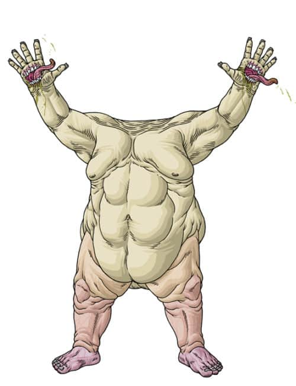

|
|
Y’GOLONAC

Y’golonac is a god of pure evil and sadism, who gets his kicks from torturing humans. He gets off on dozens of perversions that can barely be conceived by human imagination and perception, his acts stretching the limits of human comprehension. He takes a physical form through possessing human hosts, manifesting as a obese man without a head or neck, with a mouth in the palm of his hands. He seeks humans with similar perverse tastes to become his servants, coming to them when they read forbidden literature. His true form is sealed behind a wall of bricks, deep in ancient ruins beneath the earth.
|